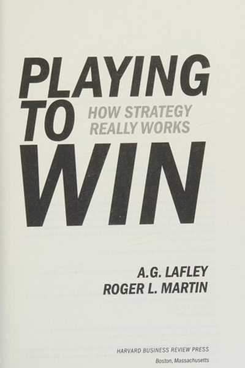

Library › Power & Strategy
Playing to Win — Summary & Key Lessons

How strategy really works — from the man who turned Procter & Gamble around and the dean of Rotman.
📖 OPEN THE FULL INTERACTIVE BREAKDOWN →🌐 Read it in Hindi, Hinglish, Gujarati, Tamil & 22 more languages — free, with audio.
💡 The Big Idea
A.G. Lafley doubled P&G's sales and quintupled its profits using one framework: strategy as a cascade of five choices — winning aspiration, where to play, how to win, capabilities, and management systems. The insight: strategy is not analysis or a document; it is a coherent set of choices about what you will and won't do, made again and again. Companies that refuse to choose lose by default.
🧠 The 5 Key Lessons
Lesson 1: Strategy Is a Choice — Especially What NOT to Do
What Is Strategy?
Most 'strategy' is a wish list — everything we might do. Real strategy is the opposite: a disciplined set of choices, and the most important choice is what you will NOT do. Every 'yes' is a silent 'no' to something else. Lafley and Martin's blunt rule: if your strategy doesn't hurt — if it doesn't force you to abandon attractive options — it isn't a strategy.
📖 Example: When Lafley took over P&G, the company was pursuing dozens of beauty brands half-heartedly. He killed the dilution, focused the company on a few core businesses it could win, and profits quintupled — the 'no's made the 'yes'es work. Read the full example →
⚡ Do this: Write your current strategy, then list 5 attractive opportunities you are deliberately declining. If you can't, your strategy is a wish list.
Lesson 2: The Five Choices: The Strategy Cascade
The Cascade
The full framework is a cascade of five interlocking choices: (1) What is our winning aspiration? (2) Where will we play? (3) How will we win there? (4) What capabilities must we build? (5) What management systems are needed? Each choice constrains the next — change one and the cascade shifts. Most companies write aspirational statements and skip the rest.
📖 Example: P&G's Olay turnaround: aspiration (win in prestige skin care), where (mass-market anti-aging), how (science-backed claims + clinical look), capabilities (R&D + dermatology partnerships), systems (dedicated marketing investment). Each choice followed from the… Read the full example →
⚡ Do this: Run your business, project or career through the five questions in one sitting. Write the answers. Check that each answer follows from the previous one.
Lesson 3: Where to Play: Choose the Battleground
Choice 2
'Where to play' is the most consequential choice: which markets, segments, geographies, customers and price points. The goal is not the biggest market — it's the arena where you can win. Great strategists study the battleground before committing resources: which segments are growing, underserved, or mis-served? Which are defended by giants you can't beat?
📖 Example: Lafley describes P&G deliberately exiting some beauty categories where it couldn't win against entrenched players, while pouring resources into under-served segments — like anti-aging for women over 40, which competitors had ignored. Read the full example →
⚡ Do this: Map your arena: list 5 potential segments/arenas, score each for size, growth, competition and your odds of winning. Move resources to your best odds, not your most comfortable space.
Lesson 4: How to Win: Build a Specific Advantage
Choice 3
'How to win' is the formula for creating advantage within your chosen arena: either a cost advantage (deliver comparable value cheaper) or a differentiation advantage (deliver something customers value more). Vague 'we'll be better' is not a plan. The win formula must be specific enough to guide every department's daily decisions.
📖 Example: P&G's 'how to win' in diapers was not 'make better diapers' — it was a specific formula: premium innovation (Pampers), cost leadership in basics (Luvs), and relentless consumer research. Every team knew its lever. Read the full example →
⚡ Do this: Write your win formula in one sentence: 'We win because we (are cheaper / deliver X better) for (specific customer).' Test it against your last 5 decisions.
Lesson 5: Strategy Is a Way of Thinking, Not an Event
Making Strategy Work
A strategy document is useless if it's filed away. Lafley and Martin's final point: strategy must become a living way of thinking — regular reviews, honest feedback, and iterative choice-making, not an annual PowerPoint. The leaders who win treat strategy like a muscle: exercised weekly, corrected constantly, owned by the whole team.
📖 Example: Lafley ran strategy as an ongoing conversation: every category had a 'strategy review' that questioned the five choices, and any executive could challenge any choice — including his. The discipline, not the document, was the strategy. Read the full example →
⚡ Do this: Schedule a 30-minute weekly strategy review for your own work: re-run the five choices, note what changed, and adjust one thing.
✅ 5-Step Action Plan
- List 5 attractive opportunities you will NOT pursue.
- Run the five-choice cascade for your business or career in writing.
- Map 5 arenas and commit to the one where you can actually win.
- Write your one-sentence win formula and test it on your last 5 decisions.
- Book a weekly 30-minute strategy review — and treat it as sacred.
⚠️ When This Doesn't Work
Lafley & Martin's 'choose where to play, how to win' is the cleanest strategy framework ever — and Sega is its warning: Sega chose where to play (console war vs Nintendo) and how to win (cooler games, edgier ads) with total clarity — and lost anyway, because the choice itself was structurally unwinnable against a competitor with better distribution and a deeper ecosystem. The framework makes your choices clear; it cannot make a bad choice good. The hardest strategy question isn't 'how do we win here' — it's 'can we win here at all?'
💀 The Graveyard Proves It
🕹️ Sega — Sonic Couldn't Outrun the Strategy. Burn: From 60% US market share to exiting the hardware business entirely. Read the full case study →
💬 Best Quotes from Playing to Win
- “Strategy is choice — and the essence of choice is choosing what not to do.”
- “Where to play and how to win are the essence of strategy.”
- “A strategy is a coordinated and integrated set of five choices.”
Interactive version: mark lessons as read, listen in your language, share quote cards.